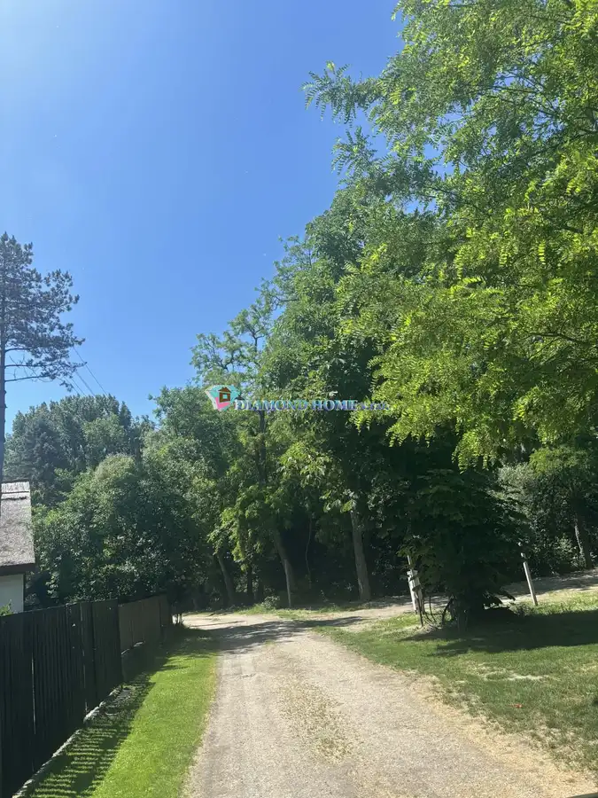
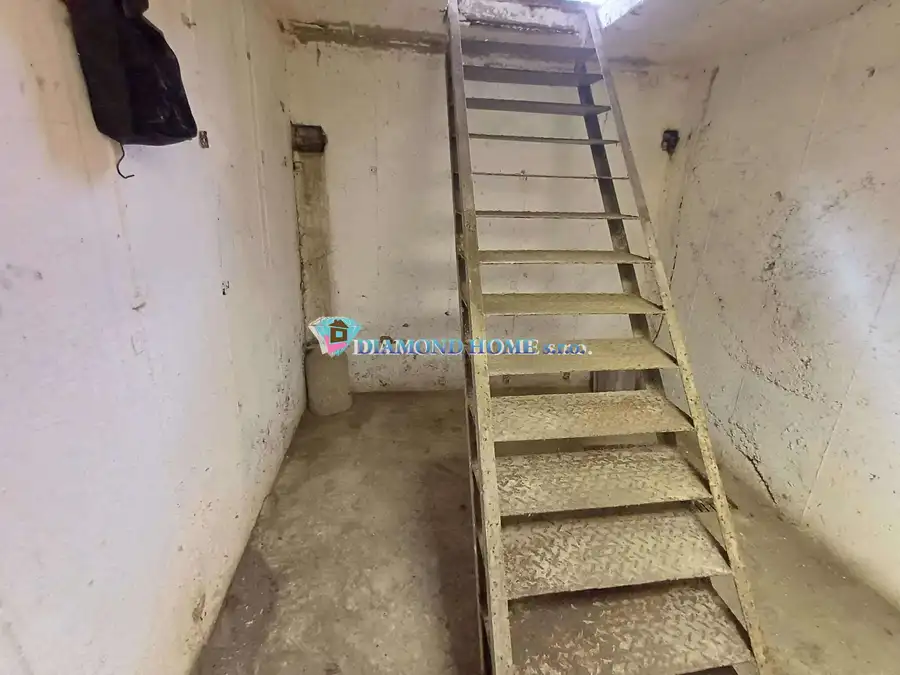
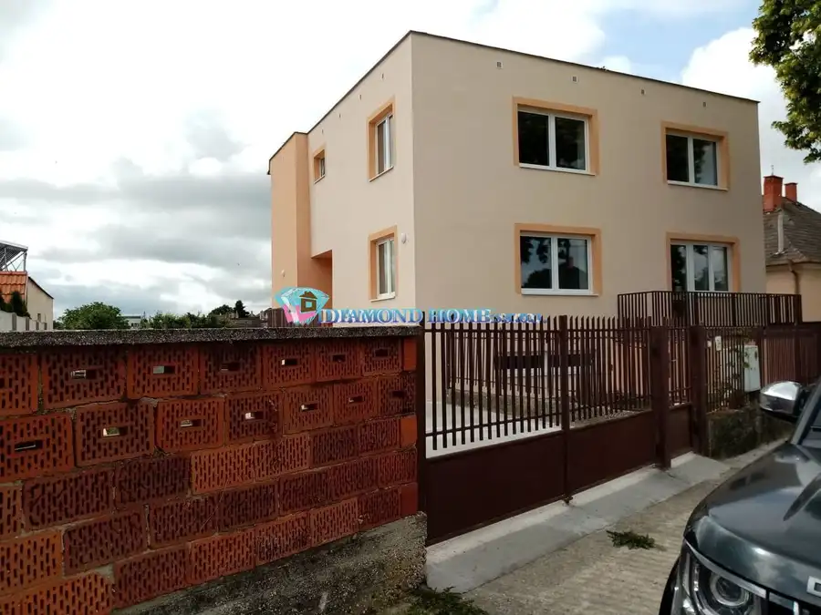

DIAMOND HOME s.r.o. ponúka Vám na predaj novostavbu 4 izbového rodinného domu zastrešeným bazénom a úsporným tepelným čerpadlom
Dolný Štál
- Plocha100 m²
- StavNovostavba
- Energetická triedaA
O nehnuteľnosti
„Hľadáte bývanie v Dunajskej Strede, ale za svoj rozpočet nachádzate len dvojdomy bez súkromia? Vymeňte 7 minút cesty autom za luxusný, samostatne stojaci 4i dom s vlastným zastrešeným bazénom, kompletným zariadením a tepelným čerpadlom v Dolnom Štáli! Netreba už nič dokončovať – stačí sa len nasťahovať. Plocha pozemku: 419 m² Zastavaná plocha rodinného domu: 112 m² Úžitková plocha: 100 m²Dispozícia domu:Vstupná chodba, 3 samostatné izby, priestranná kuchyňa spojená s obývacou izbou, kúpeľňa, samostatná toaleta a terasa s výmerou 15 m².VYSOKÝ ŠTANDARD VYBAVENIA ZAHŔŇA: Kuchynskú linku vyrobenú na mieru vrátane vstavaných spotrebičov, Kompletnú kúpeľňu s vaňou aj sprchovým kútom (s batériami zn. Hansgrohe) a umývadlom s dizajnovou doskou, Toaletu s umývadlom, obkladmi na stenách a dlažbou, Kvalitné laminátové podlahy zn. EGGER s 72-hodinovou odolnosťou voči vode, Interiérové dvere vrátane obložkových zárubní, Vonkajšie elektrické žalúzie, Nový bazén so zastrešením.TECHNICKÉ PARAMETRE DOMU:Dom bol skolaudovaný v roku 2024. Je postavený z kvalitnej tehly so zateplením hrúbky 20 cm. Strecha je sedlová s pálenou škridlou.Nehnuteľnosť je napojená na mestskú vodu a vybavená tlakovou kanalizáciou pripojenou na obecnú sieť. Elektrina: 230 V + 400 V. Pred domom je k dispozícii pohodlné parkovanie až pre 3 automobily.PRÉMIOVÁ VÝBAVA A PREDPRIAPRAVY: Úsporné podlahové kúrenie s tepelným čerpadlom, Predpríprava na fotovoltiku, Predpríprava na nabíjanie elektromobilu na parkovisku pred domom, Rozvody na klimatizáciu, 400 V kábel na zapojenie záhradného domčeka, Predpríprava na alarm, Zavedený optický internet, Predpríprava na krb ako možnosť alternatívneho kúrenia a spríjemnenia atmosféry v dome.Dom má energetický certifikát A1 s možnosťou dosiahnutia najvyššej triedy A0+ pri použití fotovoltiky (ktorú vám v prípade záujmu vieme kompletne zabezpečiť).VÝHODY:Mimoriadne nízke mesačné náklady – iba 125 €! Dom je ideálny pre rodinu, ktorá hľadá pokoj, relax a bývanie bez akýchkoľvek ďalších investícií do dokončovania.LOKALITA:Obec Dolný Štál sa nachádza na Žitnom ostrove, len 10 km od Dunajskej Stredy. Výborná občianska vybavenosť obce zabezpečuje pohodlný život jej obyvateľom. Okrem základnej školy s vyučovacím jazykom maďarským sa tu nachádza materská a základná umelecká škola, Reformovaná základná cirkevná škola, futbalové ihrisko, zdravotné stredisko, obchody, reštaurácie a veľké záhradné centrum. Milovníci koní ocenia neďaleký ranč a rybári si prídu na svoje v Relax parku za obcou. Okolie Dolného Štálu poskytuje taktiež vynikajúce možnosti pre cyklistiku a vodné športy.Odporúčam osobnú obhliadku.Naša realitná kancelária zabezpečuje kompletný právny servis. Kúpu domu je možné financovať aj prostredníctvom hypotekárneho úveru, s ktorého vybavením Vám bezplatne pomôžeme.Ak Vás táto jedinečná ponuka zaujala, neváhajte ma kontaktovať:Telefónne číslo: 0914 266 669E-mail: diamondhome.ahmodu@gmail.com
Parametre
| Druh | Rodinný dom |
|---|---|
| Dátum zverejnenia | 17. 9. 2026 |
| Energetický certifikát budovy | A |
| Plocha pozemku | 419 m² |
| Počet nadzemných podlaží | 1 |
| Rok výstavby | 2024 |
| Stav nehnuteľnosti | Novostavba |
| Terén pozemku | Rovinatý |
| Typ | Predaj |
| Typ konštrukcie | Tehlová |
| Vykurovanie | Tepelné čerpadlo |
| Zastavaná plocha | 112 m² |
| Úžitková plocha | 100 m² |
Kde to je


Mohlo by Vás zaujímať

PozemokNové4 37 740 €Len u nás! DIAMOND HOME s.r.o. ponúka Vám na predaj stavebný pozemok v Gabčíkove ,Dedinský ostrov v lokalite Dedinsky ostrov Gabčíkovo 386 m² DIAMOND HOME s.r.o. ponúka Vám na predaj stavebný pozemok v Gabčíkove ,Dedinský ostrov v lokalite Dedinsky ostrov. Ide o chránenú vodohospodársku…
Komerčné priestoryNové8 27 000 €DIAMOND HOME s.r.o. ponúka Vám na predaj, kompletne podpivničený garáž v radovej zástavbe pár krokov od centre mesta v Dunajskej Strede ulica Jilemnického Dunajská Streda 36 m² DIAMOND HOME s.r.o. ponúka Vám na predaj, kompletne podpivničený garáž v radovej zástavbe pár krokov od centre mesta v Dunajskej Strede ulica…
DomNové10 326 000 €LEN U NÁS!!!Výborný investičný zámer/DIAMOND HOME s.r.o. ponúka Vám na predaj novo rekonštruovaný rodinný dom s tromi bytovými jednotkami v obci Tomášíkovo Tomášikovo 318 m² Realitná kancelária DIAMOND HOME s.r.o. Vám exkluzívne s potešením exkluzívneponúka na predaj novo rekonštruovaný rodinný dom s tromi samostatnými…